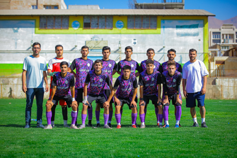

<header class="main-header">
  <nav class="navbar">
    <a href="index.html" class="logo">📸 Caspian Photographer</a>
    <ul class="nav-links">
      <li><a href="index.html">خانه</a></li>
      <li><a href="gallery.html?category=nature">گالری</a></li>
      <li><a href="about.html">درباره من</a></li>
      <li><a href="contact.html">تماس</a></li>
    </ul>
  </nav>
</header>


<!doctype html>
<html lang="fa">
  <!-- AOS Animation -->
<link href="https://unpkg.com/aos@2.3.1/dist/aos.css" rel="stylesheet">
<script src="https://unpkg.com/aos@2.3.1/dist/aos.js"></script>

<head>
  <meta charset="utf-8" />
  <meta name="viewport" content="width=device-width,initial-scale=1" />
  <title>Caspian Photographer | AmirMahdi Zareei</title>
  <link rel="stylesheet" href="style.css" />
</head>
<body>

<header class="hero">
  <h1>Caspian Photographer</h1>
  <p>By <strong>AmirMahdi Zareei</strong></p>
</header>

<main class="categories">
  <h2>دسته‌بندی‌ها</h2>
  <div class="grid">
    <a href="gallery.html?category=nature" class="cat">
      
      <span>فجر</span>
    </a>
    <a href="gallery.html?category=portrait" class="cat">
      
      <span>نماز</span>
    </a>
    <a href="gallery.html?category=urban" class="cat">
      
      <span>شهری</span>
    </a>
  </div>
</main>

<footer>
  <p>© 2025 Caspian Photographer — All photos by <strong>AmirMahdi Zareei</strong></p>
</footer>

  <script>
  AOS.init({
    duration: 800,
    offset: 100,
    once: true
  });
</script>

</body>
</html>


<footer class="main-footer">
  <p>© 2025 <strong>Caspian Photographer</strong> — Photography by <strong>AmirMahdi Zareei</strong></p>
</footer>
